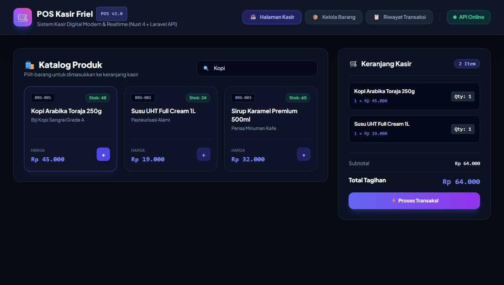

POS Kasir Friel v2.0 — Sistem Kasir Digital & Inventori
Implementasi sistem Point of Sale (POS) modern yang menghubungkan antarmuka kasir cepat (kasir-frontend via Nuxt 4) dengan backend API manajemen data barang dan nota transaksi (crud-laravel via Laravel 11).

Lokasi Proyek & Verifikasi Kode Lokal
Proyek ini diimplementasikan dan diuji di lingkungan lokal Laragon:
- Frontend:
C:\laragon\www\kasir-frontend(Nuxt 4, Vue 3, Tailwind CSS) - Backend:
C:\laragon\www\crud-laravel(Laravel 11 REST API, MySQL/SQLite)
Arsitektur & Alur Data REST API
Proyek memisahkan tanggung jawab antarmuka pengguna dengan manajemen data secara bersih:
/barang (BarangController)
Menangani operasi GET (katalog produk), POST (tambah barang baru), PUT (update stok/harga), dan DELETE (hapus barang dari master data).
/transaksi (TransaksiController)
Menerima data keranjang belanja kasir dalam bentuk array JSON, memvalidasi kuantitas stok, dan secara otomatis memotong stok barang di database.
/riwayat (RiwayatController)
Menyajikan daftar riwayat transaksi penjualan harian, nomor faktur, kalkulasi diskon, total omset, serta rincian barang per transaksi.
Peran & Kontribusi Mandiri
Sebagai fullstack developer dalam proyek ini, saya merancang:
- Antarmuka reaktif di Nuxt 4 menggunakan Vue 3 Composition API (
ref,reactive,computeduntuk subtotal dan kembalian seketika). - Desain tema gelap modern (Dark Theme) dengan Tailwind CSS yang nyaman dipandang kasir.
- Controller Laravel dengan validasi ketat sebelum transaksi disimpan ke basis data.